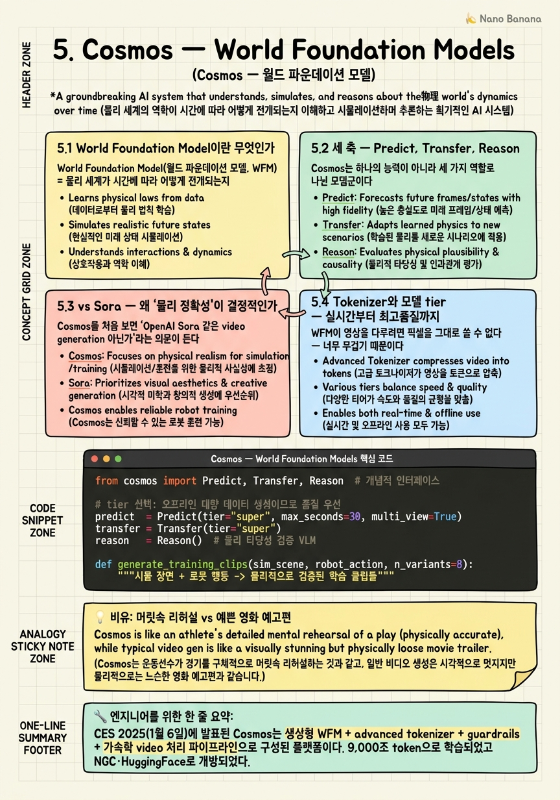

Cosmos — World Foundation Models

🎯 학습 목표
- World Foundation Model(WFM)의 정의와 목적을 설명할 수 있다
- Cosmos Predict/Transfer/Reason 각각의 역할을 구분한다
- Cosmos가 Sora류 생성모델과 다른 지점(물리 정확성)을 안다
- Cosmos 3의 omnimodel(5 modality) 확장을 이해한다
- Cosmos가 로봇 학습 데이터 생산에 꽂히는 지점을 그린다
앞의 네 챕터에서 우리는 Physical AI를 '만드는 도구'들 — Omniverse(기반), Isaac Sim(시뮬레이터), Isaac Lab(학습 프레임워크) — 을 훑었다. 이 도구들은 모두 손으로 정교하게 만든 물리 시뮬레이션에 의존한다. 그런데 로봇에게 세상의 다양성(온갖 조명·날씨·재질·돌발 상황)을 전부 손으로 모델링해 주는 것은 불가능에 가깝다. Cosmos는 바로 이 지점을 생성형 AI로 메운다.
CES 2025(2025년 1월 6일)에서 발표된 Cosmos는 단일 모델이 아니라 World Foundation Model(WFM) 플랫폼이다. 즉 '세계가 다음에 어떻게 될지'를 학습한 생성 모델을 중심에, 그 주변에 advanced tokenizer, guardrails(안전장치), 그리고 대규모 video를 빠르게 처리하는 가속 파이프라인을 두른 하나의 생태계다. 학습에 쓰인 데이터는 9,000조(9000 trillion) token 규모에 달한다.
Cosmos를 제대로 이해하는 열쇠는 'Sora와 무엇이 다른가'라는 질문이다. Sora류 video generation은 '시각적으로 그럴듯한 영상'을 만드는 데 최적화되어 있다. 반면 Cosmos의 목표는 '물리적으로 정확한 미래 상태 예측' — 즉 로봇 정책을 학습·검증하고 학습 데이터를 생성하는 데 쓸 수 있는 세계의 digital twin을 만드는 것이다. 이 챕터는 Cosmos의 세 축(Predict/Transfer/Reason), tokenizer와 모델 tier, 그리고 GTC 2026의 Cosmos 3 omnimodel까지, '왜 이것이 단순 영상 생성이 아니라 world model인가'를 파고든다.
핵심 내용
5.1 World Foundation Model이란 무엇인가
World Foundation Model(월드 파운데이션 모델, WFM) = 물리 세계가 시간에 따라 어떻게 전개되는지를 대규모 데이터로 학습해, 과거·현재로부터 그럴듯한 '미래의 세계 상태'를 생성·예측하는 파운데이션 모델.
일반 LLM이 '다음 토큰'을 예측한다면, WFM은 '다음 세계 상태'를 예측한다. 인간이 컵을 밀면 컵이 넘어져 물이 쏟아질 것을 머릿속으로 그리듯, WFM은 현재 장면과 행동을 입력받아 그 결과로 펼쳐질 장면(주로 video)을 생성한다. 이 '머릿속 시뮬레이션' 능력이야말로 로봇이 행동을 취하기 전에 결과를 예측하고, 학습 데이터를 상상으로 늘리는 토대가 된다.
중요한 것은 Cosmos가 모델 하나가 아니라 플랫폼이라는 점이다. Cosmos WFM 플랫폼은 네 요소로 구성된다.
- 생성형 WFM: 미래 세계 상태를 생성하는 핵심 모델
- advanced tokenizer: 영상을 효율적인 토큰으로 압축·복원하는 tokenizer (WFM의 입출력 표현을 담당)
- guardrails: 생성 결과의 안전·정책 준수를 강제하는 안전장치
- 가속 video 처리 파이프라인: 대규모 영상 데이터를 학습·추론용으로 빠르게 큐레이션·처리하는 파이프라인
Cosmos는 NGC와 HuggingFace를 통해 개방되어, 연구자·기업이 자신의 로봇·데이터에 맞춰 가져다 쓸 수 있다. 이 '개방성'은 Chapter 4의 Newton(Linux Foundation)과 같은 결의 전략적 선택으로, NVIDIA가 Physical AI 스택 전체를 폐쇄 자산이 아니라 표준 기반으로 밀고 있음을 보여준다.
5.2 세 축 — Predict, Transfer, Reason
Cosmos는 하나의 능력이 아니라 세 가지 역할로 나뉜 모델군이다. 이 셋을 구분하는 것이 이 챕터의 핵심이다.
Cosmos-Predict(코스모스 프리딕트) = 과거 관찰과 현재 행동을 입력받아 '미래의 세계 상태'를 rollout(전개) 영상으로 생성하는 예측 모델. 최대 30초 길이, multi-view(여러 시점 동시) 영상을 생성한다. 개념적으로 다음을 학습한다.
\[s_{t+1:t+k} = \text{Predict}(s_{\le t}, \, a_t)\]
즉 현재까지의 상태 \(s_{\le t}\)와 행동 \(a_t\)가 주어지면 이후 \(k\) 스텝의 세계 상태를 생성한다. 로봇이 '이 팔을 이렇게 움직이면 무슨 일이 벌어질까'를 상상하는 엔진이다.
Cosmos-Transfer(코스모스 트랜스퍼) = 장면의 구조(형상·배치·운동)는 유지한 채 시각 도메인만 변환하는 모델. 조명·날씨·재질 같은 겉모습을 바꾼다. 예를 들어 Isaac Sim에서 렌더한 밋밋한 시뮬 영상을 입력하면, 구조는 그대로 두고 '실사처럼' 보이게 바꾸거나(sim→real augmentation), 하나의 시뮬 장면을 낮·밤·비·안개 등 수십 가지 변형으로 늘린다(domain randomization). 이는 sim-to-real gap을 좁히는 핵심 도구다.
Cosmos-Reason(코스모스 리즌) = 영상을 이해하고 그 안의 물리적 타당성을 검증·추론하는 VLM(vision-language model). 생성된 영상이 '물리적으로 말이 되는가'(물체가 공중에 뜨지 않는가, 관성이 맞는가)를 판단하고, 장면에 대해 언어로 추론한다. Predict/Transfer가 생성기라면 Reason은 심판이자 해설자다.
이 셋은 협업한다. Predict가 미래를 상상하고 → Transfer가 그 상상을 다양한 도메인으로 불리고 → Reason이 결과물이 물리적으로 타당한지 걸러낸다. 이 파이프라인이 바로 다음 챕터들에서 다룰 합성 데이터 생산·정책 학습의 심장이 된다. 정리하면, Predict=미래 생성, Transfer=도메인 변환, Reason=타당성 검증이라는 삼각 구도다.
5.3 vs Sora — 왜 '물리 정확성'이 결정적인가
Cosmos를 처음 보면 'OpenAI Sora 같은 video generation 아닌가'라는 의문이 든다. 겉모습(텍스트·조건 → 영상)은 비슷하지만, 최적화 목표가 근본적으로 다르다.
Sora류 모델의 목표는 '시각적으로 그럴듯한 영상'이다. 사람이 봤을 때 아름답고 자연스러우면 성공이다. 물이 살짝 비현실적으로 흐르거나 물체가 순간 사라져도, 시청 경험이 좋으면 목적을 달성한 것이다. 이는 콘텐츠·엔터테인먼트에 최적이다.
Cosmos의 목표는 '물리적으로 정확한 미래 상태 예측'이다. 여기서 영상은 감상물이 아니라 로봇이 학습·검증에 쓸 데이터다. 로봇 정책이 '컵을 밀면 이만큼 미끄러진다'를 Cosmos가 만든 영상에서 배우는데, 그 물리가 틀렸다면 실제 세계에서 정책이 실패한다. 그래서 Cosmos는 아름다움이 아니라 '이 예측이 실제 물리와 부합하는가'로 평가받는다.
| 축 | Sora류 video gen | Cosmos WFM |
|---|---|---|
| 최적화 목표 | 시각적 그럴듯함 | 물리적 정확성 |
| 산출물의 용도 | 감상·콘텐츠 | 정책 학습·검증·데이터 생성 |
| 성공 기준 | 사람 눈에 자연스러움 | 실제 물리와의 부합 |
| 검증 도구 | 사람 평가 | Cosmos-Reason(물리 타당성) |
| 대상 | 미디어 | 로봇·AV·산업 |
NVIDIA의 표현을 빌리면 Cosmos는 '단순 영상 생성이 아닌 세계의 digital twin을 만드는 기반 world model'이다. 이 차이가 왜 중요한가? 로봇 학습에서 진짜 병목은 데이터다. 실제 로봇으로 물리 세계의 다양성을 다 겪게 하려면 시간·비용·안전 문제가 폭발한다. Cosmos는 '물리적으로 정확한' 상상으로 이 데이터를 대량 생성해, 로봇이 실제로 겪지 않은 상황까지 안전하게 학습하게 해준다. Sora가 상상을 '보여주는' 도구라면, Cosmos는 상상을 '검증 가능한 훈련 데이터로 바꾸는' 도구다.
5.4 Tokenizer와 모델 tier — 실시간부터 최고품질까지
WFM이 영상을 다루려면 픽셀을 그대로 쓸 수 없다 — 너무 무겁기 때문이다. 여기서 tokenizer가 결정적이다.
Advanced tokenizer(고급 토크나이저) = 고해상도 영상을 소수의 이산·연속 token으로 압축하고 다시 영상으로 복원하는 모듈. 압축률이 높을수록 WFM이 더 긴 영상을, 더 적은 연산으로 다룰 수 있다. LLM에서 BPE tokenizer가 텍스트 효율을 좌우하듯, WFM에서는 video tokenizer가 생성 품질과 속도의 상한을 정한다. Cosmos가 tokenizer를 플랫폼의 별도 축으로 강조하는 이유가 이것이다 — 좋은 tokenizer 없이는 30초 multi-view 영상을 실용적 비용에 생성할 수 없다.
Cosmos는 용도에 따라 세 가지 모델 크기 tier를 제공한다.
| Tier | 특징 | 대표 용도 |
|---|---|---|
| Nano(나노) | 저지연·실시간 | 로봇·edge에서 실시간 예측 |
| Super(슈퍼) | 균형 | 범용 개발·데이터 생성 |
| Ultra(울트라) | 최고 품질 | 고충실도 시뮬·검증 |
이 tier 구조는 Physical AI의 현실적 요구를 반영한다. Jetson 위에서 로봇이 '다음 순간'을 실시간 예측하려면 지연이 밀리초 단위여야 하므로 Nano가 필요하고, 반대로 오프라인에서 대규모 학습 데이터를 최고 품질로 뽑을 때는 Ultra가 맞다. Super는 그 사이의 일상적 개발 지점이다.
학습 규모도 이 야심을 뒷받침한다. Cosmos WFM은 9,000조(9000 trillion) token으로 학습되었는데, 이는 '세계가 어떻게 움직이는지'에 대한 방대한 사전 지식을 모델에 심기 위함이다. LLM이 인터넷 텍스트로 언어의 통계를 익히듯, Cosmos는 방대한 영상으로 물리 세계의 통계 — 물체가 떨어지고, 부딪히고, 흐르는 방식 — 를 익힌다. 이 사전 지식이 있어야 소량의 로봇별 데이터로 fine-tune해도 물리적으로 타당한 예측이 나온다.
5.5 Cosmos 3 — omnimodel과 mixture-of-transformers
GTC 2026에서 Cosmos는 3세대로 도약한다. Cosmos 3의 핵심은 '최초의 fully open omnimodel'이라는 점이다.
Omnimodel(옴니모델) = text, image, video, ambient audio(환경 소리), action(행동/궤적)의 5가지 modality를 하나의 모델이 양방향으로 네이티브 처리하는 모델. 즉 이 다섯을 입력으로도 받고 출력으로도 낸다.
이는 Physical AI에서 큰 의미를 갖는다. 이전 Cosmos가 주로 '영상을 예측'했다면, omnimodel은 장면을 이해하고(text로 추론) → 소리까지 포함한 미래를 그리며(video+audio 생성) → 로봇이 취할 행동 궤적(action)까지 함께 내놓는다. 지각·추론·행동이라는 Physical AI의 정의(Chapter 1)가 하나의 모델 안에서 닫히는 셈이다.
이를 가능케 하는 아키텍처가 mixture-of-transformers다. 이는 크게 두 부분으로 나뉜다 — 객체 상호작용·운동·시공간 관계를 이해하는 reasoning transformer와, 그 이해를 바탕으로 실제 영상·action 궤적을 만들어내는 expert generation transformer다. 먼저 세계를 '이해'한 뒤 그 위에서 '생성'하는 2단 구조로, 물리적으로 일관된 결과를 목표로 한다.
출시 계획도 tier로 나뉜다. Nano 16B와 Super 64B가 즉시 제공되고, Edge 2B는 추후 — 여기서 Edge는 극단적 경량 배치(로봇 온보드)를 겨냥한다. 세 축도 각각 업그레이드된다.
- Cosmos Predict 2.5: 세 종류의 WFM을 하나로 통합, 최대 30초·multi-view 유지
- Cosmos Transfer 2.5: 이전 대비 3.5배 더 작고 빠르면서 고품질
- Cosmos Reason 2: (CES 2026) 물리 추론 강화 버전
이 진화의 방향은 명확하다 — 더 많은 modality(omnimodel), 더 효율적인 생성(Transfer 2.5의 3.5배 압축), 더 깊은 물리 추론(Reason 2). Cosmos는 '영상을 예쁘게 만드는 모델'에서 '세계를 이해하고, 미래를 다중 감각으로 상상하며, 행동까지 제안하는 world model'로 나아가고 있다. 이것이 뒤에 이어질 GR00T·합성 데이터·R²D² 워크플로우가 딛고 설 데이터 엔진의 최신 형태다.
💡 비유로 이해하기
농구 자유투를 던지기 직전, 선수는 눈을 감고 공이 손을 떠나 포물선을 그리며 림을 통과하는 장면을 머릿속으로 그린다. 이 '머릿속 리허설'은 아름다움이 목적이 아니다 — 실제 물리(공의 무게, 손목의 각도, 중력)를 최대한 정확히 시뮬레이션해야 다음 실제 슛에 도움이 된다. 각도가 조금만 틀린 상상은 오히려 해가 된다. 이것이 Cosmos-Predict다. 로봇이 행동하기 전에 '이렇게 하면 이렇게 될 것'을 물리적으로 정확히 리허설한다.
반면 Sora류 모델은 '멋진 영화 예고편'을 만드는 감독이다. 공이 실제보다 조금 느리게 날거나 궤적이 살짝 비현실적이어도, 관객이 감탄하면 성공이다. 물리 정확성이 아니라 시각적 임팩트가 목표다.
Cosmos-Transfer는 같은 리허설을 여러 조건에서 반복하는 것이다. 같은 자유투를 '햇살 좋은 야외 코트', '조명 어두운 체육관', '비 오는 날'로 상상 속에서 바꿔 던져보는 것 — 장면 구조(슛 동작)는 같고 배경 조건만 바뀐다. 그래서 실제로 어떤 코트에 가도 흔들리지 않는다(domain randomization).
Cosmos-Reason은 옆에서 지켜보는 코치다. 리허설이 끝나면 '방금 그 상상, 공이 중력을 무시하고 떴어 — 물리적으로 말이 안 돼'라고 걸러준다. 상상(Predict)과 그 변주(Transfer)를 코치(Reason)가 검증하는 이 삼각 협업이, 실제 시합(로봇 배치) 전에 안전하고 값싸게 실력을 쌓게 해준다.
💻 코드 예시
Cosmos의 세 축(Predict → Transfer → Reason)이 어떻게 하나의 파이프라인으로 이어져 로봇 학습용 합성 데이터를 만드는지 보여주는 개념 코드다. 실제 API가 아닌 pseudo이며, 요점은 '미래 생성 → 도메인 변주 → 물리 검증'의 데이터 흐름이다.
from cosmos import Predict, Transfer, Reason # 개념적 인터페이스
# tier 선택: 오프라인 대량 데이터 생성이므로 품질 우선
predict = Predict(tier="super", max_seconds=30, multi_view=True)
transfer = Transfer(tier="super")
reason = Reason() # 물리 타당성 검증 VLM
def generate_training_clips(sim_scene, robot_action, n_variants=8):
"""시뮬 장면 + 로봇 행동 -> 물리적으로 검증된 학습 클립들"""
dataset = []
# 1) PREDICT: 과거 관찰 + 현재 행동 -> 미래 세계 상태 rollout
future = predict.rollout(observations=sim_scene, action=robot_action)
# 2) TRANSFER: 구조는 유지, 시각 도메인만 변주 (domain randomization)
for cond in sample_conditions(n_variants): # 낮/밤/비/안개/재질...
varied = transfer.apply(future, lighting=cond.light,
weather=cond.weather, material=cond.material)
# 3) REASON: 물리적으로 타당한 클립만 통과시킴
verdict = reason.check_physics(varied)
if verdict.is_plausible: # 뜨는 물체/관성 위반 등 제거
dataset.append({"clip": varied, "action": robot_action,
"domain": cond.name})
else:
log("rejected:", verdict.reason) # 예: '물체가 공중 부양'
return dataset # -> Isaac Lab / GR00T 학습으로 투입
# sim->real gap을 좁힌, 검증된 대량 합성 데이터가 만들어진다
clips = generate_training_clips(sim_scene, robot_action, n_variants=8)핵심은 세 축의 역할 분담이다. (1) Predict.rollout은 현재 관찰(sim_scene)과 행동(robot_action)을 받아 '이후 30초의 미래'를 multi-view로 생성한다 — 이것이 s_{t+1:t+k} = Predict(s_≤t, a_t)의 구현이다. (2) Transfer.apply는 같은 장면 구조를 조명·날씨·재질만 바꿔 n_variants개로 불린다 — 하나의 상상을 domain randomization으로 대량 증강하는 지점이다. (3) Reason.check_physics는 각 변주가 물리적으로 타당한지 검증해, 물체가 공중에 뜨는 등 물리 위반 클립을 걸러낸다 — Sora류에는 없는 '물리 정확성 필터'다. 통과한 클립만 action 라벨과 함께 dataset에 쌓여 Isaac Lab·GR00T 학습으로 투입된다. tier=super는 품질과 속도의 균형점이며, 실시간이 필요하면 nano, 최고 충실도가 필요하면 ultra로 바꾼다.
🏭 현업에서의 평가
✅ 시니어가 보는 것
- World Foundation Model을 '다음 세계 상태 예측'으로 정의하고, Cosmos가 모델이 아니라 플랫폼(WFM+tokenizer+guardrails+가속 파이프라인)임을 아는가
- Predict(미래 생성)·Transfer(도메인 변환)·Reason(물리 검증) 세 축의 역할을 정확히 구분하는가
- Cosmos vs Sora의 핵심 차이를 '시각적 그럴듯함 vs 물리적 정확성', '감상물 vs 학습·검증 데이터'로 명확히 대비하는가
- tokenizer가 왜 별도 축인지(영상 압축이 WFM 품질·비용의 상한), Nano/Super/Ultra tier가 실시간~고품질 스펙트럼을 커버함을 이해하는가
- Cosmos가 sim-to-real gap 축소와 합성 데이터 생성에 어떻게 쓰이는지(Transfer의 domain randomization, Reason의 필터링) 파이프라인으로 그리는가
⚠️ 레드 플래그
- Cosmos를 그냥 'NVIDIA판 Sora'로 뭉뚱그리고 물리 정확성이라는 목표 차이를 놓치는 경우
- Predict/Transfer/Reason의 역할을 뒤섞는 경우(예: Transfer가 미래를 예측한다고 설명)
- world model이 로봇 데이터 문제(실데이터 수집의 비용·안전·다양성 한계)를 왜 푸는지 연결하지 못하는 경우
- tokenizer를 단순 전처리로만 보고 WFM 품질·비용의 상한을 정한다는 점을 모르는 경우
- Cosmos 3 omnimodel의 5 modality(text·image·video·audio·action)나 mixture-of-transformers(이해+생성 2단)를 근거 없이 설명하는 경우
🎤 예상 인터뷰 질문
- Q1 (정의와 구분): World Foundation Model이란 무엇이며 일반 video generation과 어떻게 다른가? Cosmos-Predict/Transfer/Reason 각각의 역할을 하나의 데이터 생성 파이프라인 안에서 순서대로 설명하라.
- Q2 (vs Sora): Cosmos와 Sora류 모델이 '겉으로는 둘 다 텍스트→영상'인데도 근본적으로 다른 이유를 최적화 목표·산출물 용도·성공 기준의 세 축으로 대비하라. 물리 정확성이 로봇 학습에서 왜 타협 불가한지 예를 들어라.
- Q3 (파이프라인 통합): 로봇 조작 정책을 학습시키는데 실데이터가 부족하다. Cosmos의 세 축과 tier(Nano/Super/Ultra)를 어떻게 조합해 sim-to-real gap을 줄인 대량 학습 데이터를 만들겠는가? Reason이 이 파이프라인에서 하는 결정적 역할은 무엇인가?
✨ 핵심 요약
Cosmos는 모델이 아니라 WFM 플랫폼이다
CES 2025(1월 6일)에 발표된 Cosmos는 생성형 WFM + advanced tokenizer + guardrails + 가속 video 처리 파이프라인으로 구성된 플랫폼이다. 9,000조 token으로 학습되었고 NGC·HuggingFace로 개방되었다.
World Foundation Model은 '다음 세계 상태'를 예측한다
LLM이 다음 토큰을 예측한다면 WFM은 다음 세계 상태를 예측한다. 과거·현재로부터 물리적으로 타당한 미래 장면을 생성해, 로봇이 행동 전에 결과를 상상하고 학습 데이터를 늘리는 토대가 된다.
세 축 — Predict는 미래, Transfer는 도메인, Reason은 검증
Cosmos-Predict(과거 관찰+행동→미래 rollout, 최대 30s·multi-view), Cosmos-Transfer(구조 유지·조명/날씨/재질 변환, sim→real·domain randomization), Cosmos-Reason(영상 이해·물리 타당성 검증 VLM). 셋이 생성→변주→검증으로 협업한다.
Sora와의 차이는 '물리 정확성'이다
Sora류는 시각적으로 그럴듯한 영상이 목표이고, Cosmos는 물리적으로 정확한 미래 예측이 목표다. Cosmos의 영상은 감상물이 아니라 로봇 정책 학습·검증·데이터 생성에 쓰이는, 세계의 digital twin을 만드는 기반 world model이다.
Cosmos는 로봇 데이터 병목을 상상으로 푼다
실제 로봇으로 세상의 다양성을 다 겪는 것은 비용·안전·시간 문제다. Cosmos는 물리적으로 정확한 상상으로 대량 데이터를 생성하고, Transfer로 도메인을 늘리고 Reason으로 타당성을 걸러 sim-to-real gap을 좁힌다.
Tokenizer와 tier가 실용성을 결정한다
advanced tokenizer는 영상을 효율적 token으로 압축해 WFM 품질·비용의 상한을 정한다. 모델 tier는 Nano(저지연 실시간)·Super(균형)·Ultra(최고품질)로 나뉘어 edge 실시간부터 오프라인 고충실도까지 커버한다.
Cosmos 3는 최초의 fully open omnimodel
GTC 2026의 Cosmos 3는 text·image·video·ambient audio·action 5 modality를 양방향 네이티브 처리한다. Nano 16B·Super 64B 즉시, Edge 2B 추후. 지각·추론·행동이 한 모델에서 닫힌다.
mixture-of-transformers — 이해한 뒤 생성한다
Cosmos 3는 객체 상호작용·운동·시공간 관계를 이해하는 reasoning transformer와 영상·action 궤적을 만드는 expert generation transformer로 나뉜다. Predict 2.5(3 WFM 통합), Transfer 2.5(3.5배 작고 빠름), Reason 2(CES 2026)로 효율·추론이 강화됐다.